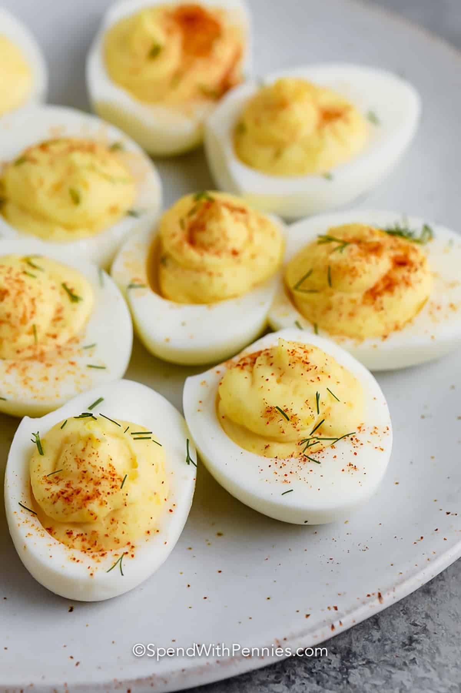

Deviled Eggs

Description
An easy but spicy deviled egg recipe!
Ingredients
- 8 large eggs
- ⅓ cup mayonnaise
- 2 tablespoons Worcestershire sauce
- 2 tablespoons cream-style horseradish sauce
- 1 drop hot pepper sauce, or to taste
- salt and pepper to taste
- 1 teaspoon dried parsley flakes, for garnish
- 1 teaspoon paprika, for garnish
Steps
- Place eggs into a saucepan in a single layer and cover
with water by 1 inch.
- Cover the saucepan and bring to a boil.
- Remove from the heat and let eggs stand in hot water
for 15 minutes.
- Drain and cool under cold running water in the sink.
- Peel cool eggs and cut in half lengthwise. Place yolks
into a mixing bowl and set whites aside.
- Mash yolks with a fork until smooth; stir in mayonnaise,
Worcestershire sauce, horseradish, hot sauce, salt, and pepper.
- Spoon yolk mixture into a heavy plastic bag; snip a corner off the
bag to create a 1/2-inch opening.
- Pipe yolk mixture into egg white halves.
- Chill for at least 30 minutes before serving. Sprinkle with parsley
and paprika to garnish.
Home